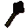

Black mace

| Config name | black_mace |
| Item id | 1426 |
| Value | 432 gp |
| Weight | 4lb |
| Members | No |
| Tradeable | Yes |
| Stackable | No |
| Equip slot | righthand |
| Options | Wield |
| Category | weapon_spiked |
| Defined in | scripts/skill_combat/configs/melee/maces.obj |
| Equipment stats | Stab att 8, Slash att -2, Crush att 16, Strength 13, Prayer 2 |
Black mace
A spiky mace.
Dropped by
| NPC | Level | Quantity | Rarity | Via | Notes |
|---|---|---|---|---|---|
| 8 | 1 | 1/128 (0.78%) |
Referenced in scripts
scripts/drop tables/scripts/dark_warrior.rs2scripts/levelrequire/scripts/tier10.rs2